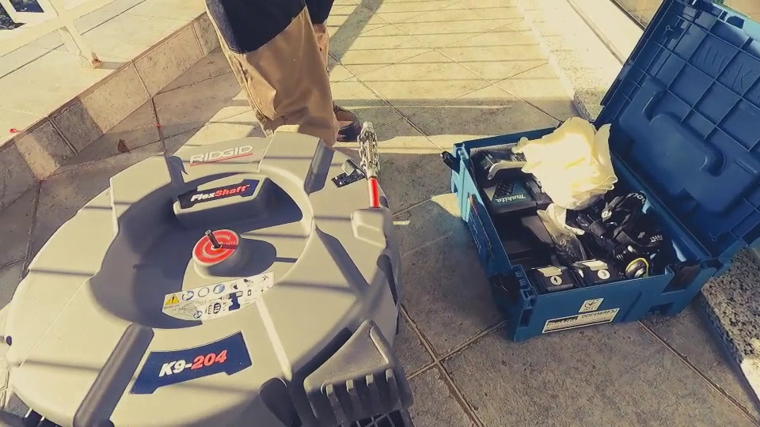
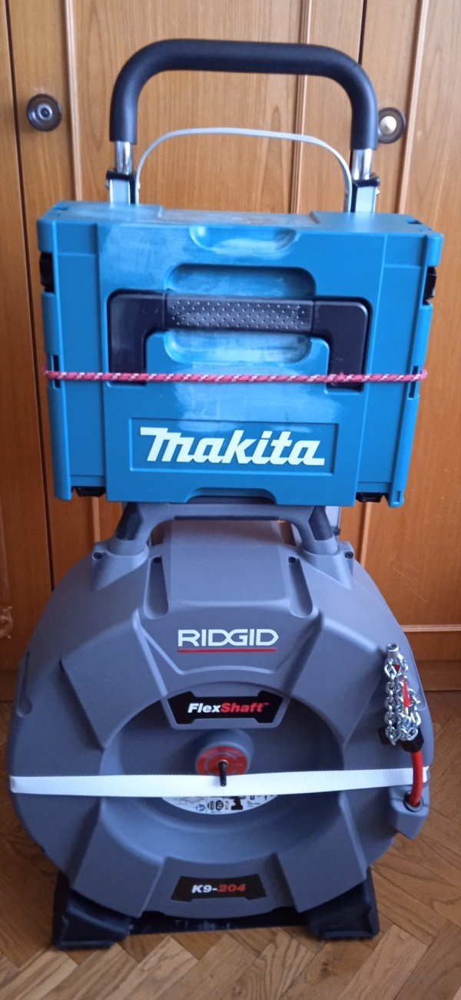
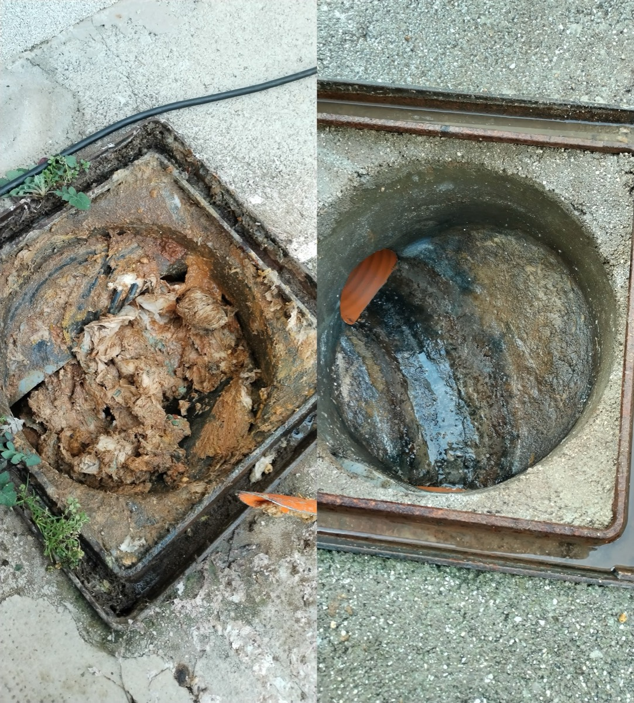
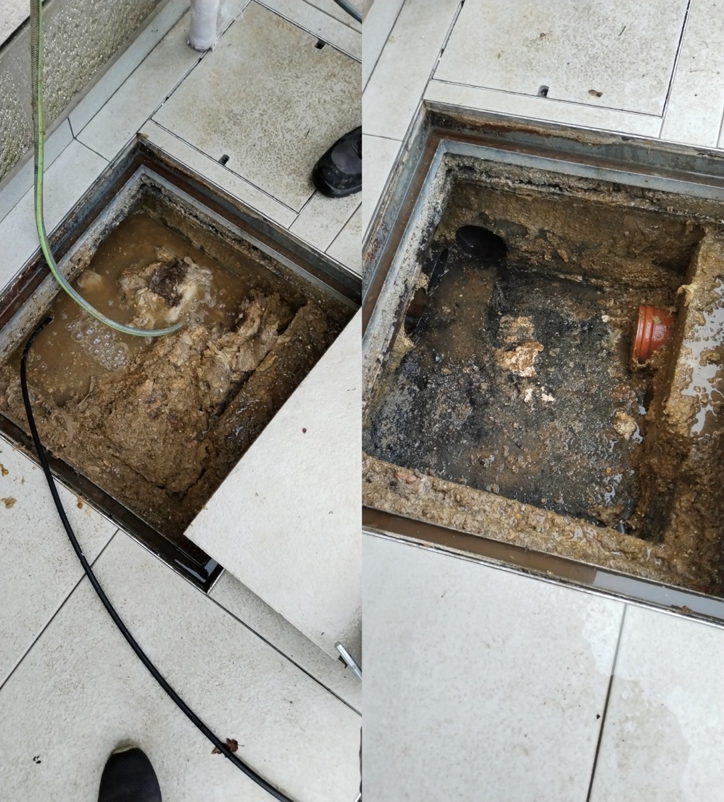
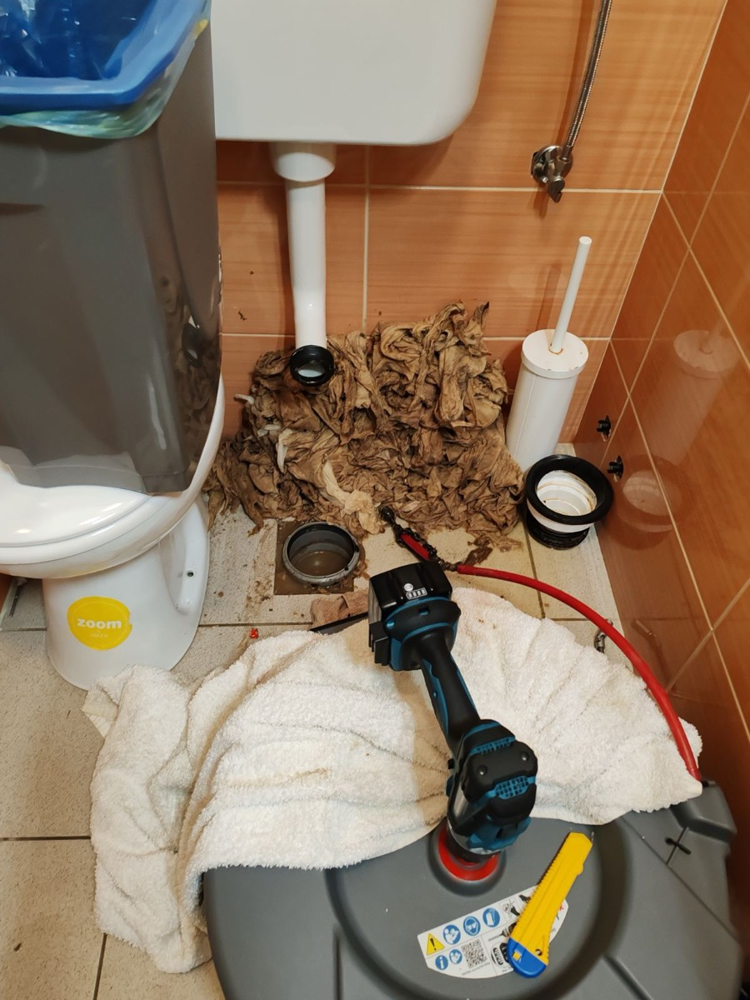
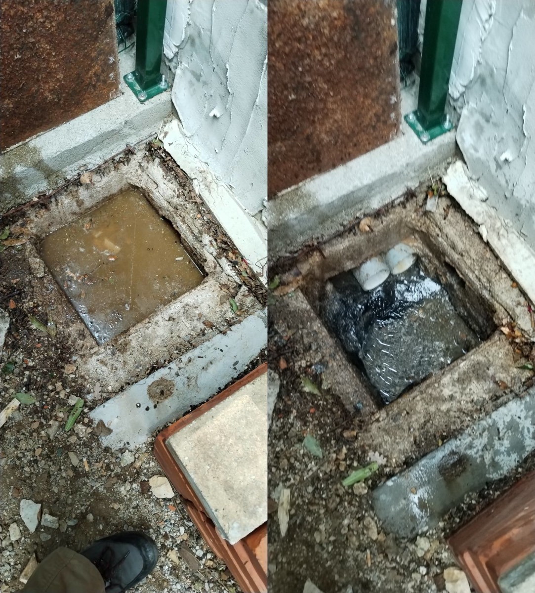

Sudoperi
Kuhinjski i kupaonski sudoperi i umivaonici koji sporo otječu ili su potpuno začepljeni.
Rijeka i okolica
Sudoper, WC školjka, kada, tuš, slivnik ili kanalizacija. Arsen dolazi sa strojem za čišćenje cijevi i kamerom za pregled, svaki dan od 7 do 23 sata, i nedjeljom.

Brzo · profesionalno · sigurnoUsluge
Začepljenje se rijetko riješi samo od sebe. Nazovite, opišite gdje voda stoji i dogovorite dolazak i okvirnu cijenu.
Kuhinjski i kupaonski sudoperi i umivaonici koji sporo otječu ili su potpuno začepljeni.
Začepljena WC školjka i odvodna cijev iza nje, u stanu, kući, apartmanu ili restoranu.
Odvodi kade i tuš kabine u kojima voda stoji ili se vraća.
Podni slivnici u kupaonici, garaži i dvorištu, s čišćenjem taloga.
Začepljena kanalizacijska cijev, revizijska okna i šahte u dvorištu.
Nakon čišćenja cijev se može pregledati RIDGID kamerom, da se vidi stanje odvoda iznutra.
Kako ide
Na 098 203 666, svaki dan od 7 do 23 sata. Recite što je začepljeno i gdje se nalazite.
Okvirnu cijenu dogovorite telefonom, prije dolaska. Bez iznenađenja na kraju.
Arsen dolazi sa strojem za čišćenje cijevi, otčepi odvod i iza sebe ostavi uredno.

Oprema
Za tvrdokorna začepljenja Arsen radi profesionalnim strojem za čišćenje cijevi RIDGID K9-204, a za pregled stanja cijevi ima RIDGID kameru.
Radovi
Fotografije s terena, s Google profila. Pređite mišem preko slike za boju.





Recenzije
Nedjelja ujutro, Arsen dolazi na Čavle unutar pola h i brzo riješava začepljenje. Svaka preporuka za brzinu i odrađen posao!
Imali smo smjenu gostiju i začepljenu wc školjku! Od poziva do riješene stvari je doslovce prošlo sat vremena! Velika preporuka svima!!
Došao je točno u dogovorenom terminu i izuzetno temeljito i stručno odradio posao. Uspješno je riješio problem začepljene kanalizacije. Jasno je objasnio što je sve potrebno napraviti i koja je cijena usluge.
Covjek me je spasio, došao je u nedjelju par sati nakon poziva. Detaljno, pedantno i brzo je obavio posao i ostavio je sve čisto iza sebe.
Po dojavi vrlo brzo stigao na otok Krk u Punat te brzo rješen problem zaštopanih odvoda wc-a u našem restoranu!
Jako smo zadovoljni, stručan, ljubazan, došao u nedjelju ujutro, riješio problem začepljenog odvoda i cijevi, sve ostavio čisto. Sve preporuke!
Recenzije su preuzete s Google profila „Odštopavanje odvoda Rijeka i okolica”, doslovno, uz manja skraćivanja.
Pitanja
Svaki dan od 7 do 23 sata, i subotom i nedjeljom, na broj 098 203 666.
Cijena ovisi o vrsti i mjestu začepljenja. Okvirnu cijenu dogovarate telefonom, prije dolaska majstora.
Da. Uz stroj za čišćenje cijevi Arsen ima i RIDGID kameru za pregled cijevi, pa se nakon čišćenja može vidjeti stanje odvoda iznutra.
U Rijeku i okolicu. Prema recenzijama klijenata, dolazio je i na Trsat, u Čavle, Opatiju, Kraljevicu i u Punat na Krku. Za udaljenije mjesto pitajte telefonom.
Što je začepljeno (sudoper, WC, kada, slivnik, šahta), od kada je problem i na kojoj ste adresi. Tako se lakše dogovore dolazak i cijena.
Kontakt
| Ponedjeljak | 07–23 |
| Utorak | 07–23 |
| Srijeda | 07–23 |
| Četvrtak | 07–23 |
| Petak | 07–23 |
| Subota | 07–23 |
| Nedjelja | 07–23 |
Za hitno začepljenje najbrže je nazvati 098 203 666.